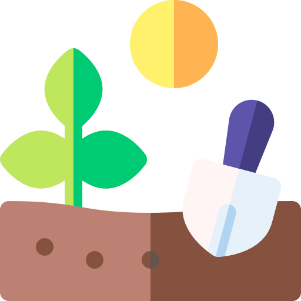

<div class="container p-4">
    <!--Grid row-->
    <div class="row">
      <div class="col-lg-5 col-md-7 mb-4 mb-md-0">
        <h3>Mis Jardines</h3>
        <input style="align-items: flex-start;" type="button" class="btn btn-primary" name="+" value="+" style="width: 400px; height: 100px;">
      <br>  
      <br>  
        <input style="align-items: flex-start;" type="button" class="btn btn-primary" name="+" value="+" style="width: 400px; height: 100px;">    
      </div>
      <div class="col-lg-3 col-md-6 mb-4 mb-md-0">
        
      </div>
      <div class="col-lg-4 col-md-12 mb-4 mb-md-0">
          <h5 style="padding-top: 40%;">Información de panel.</h5>
        <p>En este apartado podrás encontrar tus jardines y podrás crear nuevos para asi monitorear a tus plantas.</p>
      </div>
    </div>
  </div>
